| HOME | PERSONAL | PROJECTS | LINKS |
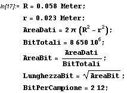
si osservi che ci sono anche bit di controllo e quindi BitPerCampione può essere calcolato più precisamente così
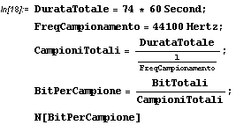
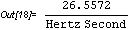
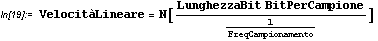
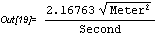
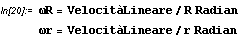
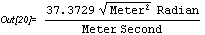
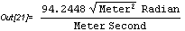
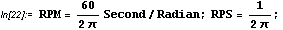
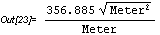
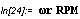
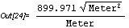
Un lettore CD dati 24x raggiunge la velocità massima di 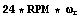
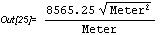
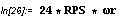
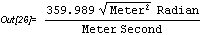
Provenienza CD rom Vuego 8x.
Caratteristiche sconosciute.
Da 0 a 8x in 2 s.
Si può quindi stimare la potenza che assorbe il motore per
effettuare l'accelerazione suddetta.
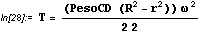
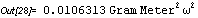
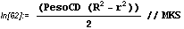
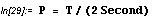
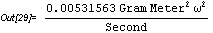
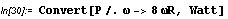
Provenienza CD rom Vuego 24x.
20 step.
3 terminali.
Impedenza per ramo R=3Ω.
Possibilità di pilotaggio :
con due livelli di tensione, tre combinazioni,
potenza =
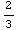
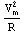
, "una specie di full step mode".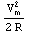
.Stepper 200 step, unipolare 4 fasi, 5 VA per fase.
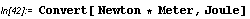
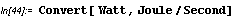
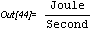
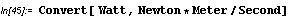
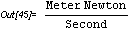
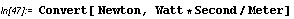
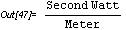
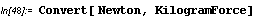
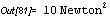
| HOME | PERSONAL | PROJECTS | LINKS |